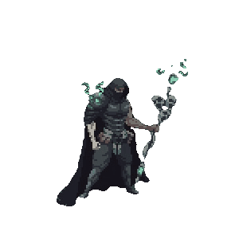

-
Andrius #001 - Protetor
Andrius, o lobo majestoso, possui um poder azul relacionado ao fogo. Ele controla e manipula chamas azuis poderosas, criando labaredas, lançando bolas de fogo e gerando explosões. Sua presença é marcada por uma aura flamejante e imponente.
-
Cammy #002 - Feiticeiro
Cammy, manipuladora do ar, controla correntes de vento poderosas. Ela cria rajadas, redemoinhos e escudos protetores de ar. Sua destreza e agilidade a tornam uma oponente formidável com ataques aéreos rápidos e precisos.
-
Cristha #003 - Feiticeiro
Cristha, manipuladora estelar, emana faíscas brilhantes semelhantes a estrelas. Ela controla e manipula energia estelar, criando explosões luminosas, lançando projéteis estelares e gerando escudos protetores. Sua presença é envolta por um brilho cósmico, demonstrando seu poder celestial.
-
Eveline #004 - Protetor
Eveline, uma elfa graciosa, manipula o elemento terra com seu arco coberto de vegetação e flores representando sua conexão com a natureza. Ela molda o solo, cria vinhas e invoca pedras para lançar contra seus inimigos. Sua presença irradia tranquilidade e vitalidade da terra.
-
Freya #005 - Protetor
Freya, um ser híbrido humanoide com conexão profunda com animais, empunha uma arma híbrida de lança e foice com pontas de ossos animais. Ela se comunica e comanda os animais, convocando-os para auxiliá-la. Sua presença enigmática é marcada pela força e agilidade dos animais.
-

Jax #006 - Guardião
Jax, um ser enigmático, manipula as sombras com sua capa preta e máscara. Seu cajado com a cabeça de caveiras é uma arma sombria. Ele cria ilusões, oculta-se nas sombras e lança ataques sombrios. Sua presença é envolta em mistério e uma aura ameaçadora.
-
Keysha #007 - Espadachim
Keysha, uma guerreira poderosa, manipula a luz com sua espada reluzente. Ela cria explosões de luz intensa, projetar raios de luz laser e até mesmo gerar escudos de proteção luminosos. Sua presença é marcada por um brilho radiante e uma aura de esperança.
-
Selphie #008 - Guardião
Selphie, uma manipuladora do som, utiliza seus muchachos para controlar e manipular o som. Ela cria ondas sonoras poderosas, lança ataques sônicos e cria barreiras de som. Sua presença é acompanhada por uma sinfonia, demonstrando sua maestria na manipulação sonora.
-
Terry #009 - Espadachim
Terry, uma guerreira habilidosa, manipula a névoa com sua longa espada. Ela cria cortinas densas de névoa para confundir seus oponentes. Sua presença é marcada por uma aura misteriosa, envolta em névoa, e pela presença de um dragão ao redor de seu pescoço.
-
Yshtola #010 - Feiticeiro
Yshtola, uma conjuradora poderosa, manipula a água com seu cajado azul. Ela cria ondas poderosas, jatos d'água devastadores e escudos protetores. Sua presença é envolta por uma aura serena e fluída.